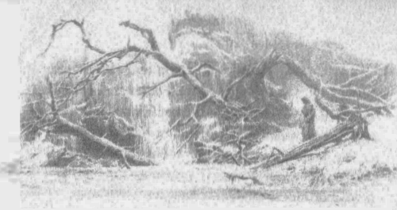
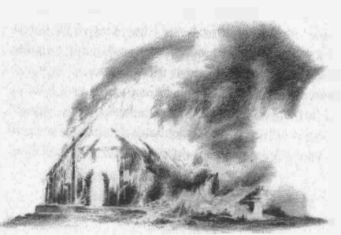

12
Sonunda, telaş ve yolun uzunluğu yüzünden yıpranmış bir halde (çünkü dinlenmeden kırk fersahtan fazla yol almıştı), kışın ilk buzlarında Ivrin göletlerine, eskiden şifa görmüş olduğu yere geldi. Ama şimdi orası donmuş bir bataklıktan ibaretti ve oradan su içemezdi.
Oradan Dor-lómin Geçitlerine vardı ve kuzeyden gelen kar acı acı çöktü; yollar tehlikeli ve soğuktu. O yoldan yürümesinin üzerinden yirmi üç sene geçmiş olmasına rağmen, yol yüreğine kazınmıştı, Morwen’den ayrılırken attığı her adımın acısı o kadar büyüktü. Böylece, sonunda çocukluğunun geçtiği diyara gelmiş oldu. Kasvetli ve çıplaktı; ve oradaki insanlar sayıca az ve kabaydı; Doğuluların kaba dilini konuşuyorlardı, ve kadim lisan kölelerin ya da düşmanların dili olmuştu. Bu yüzden Túrin, başlığını takarak sessizce, ihtiyatla yürüdü ve sonunda aradığı eve geldi. Ev boş ve karanlıktı ve içinde hiçbir canlı yaşamıyordu, çünkü Morwen gitmişti ve muhacir Brodda (Húrin’in akrabası Aerin’i zorla karısı yapan) evi yağmalamış, Morwen’e kalan tüm malları ve hizmetkarları almıştı. Húrin’in evine en yakın ev Brodda’nınkiydi; yolculuğu ve acısı yüzünden bitkin düşmüş olan Túrin oraya gidip barınak dilendi; ve dileği ona bahşedildi, çünkü Aerin orada eski zamanların sevecen âdetlerinin bazılarını hâlâ koruyordu. Túrin’e oturması için ateşin yanında, hizmetkarların ve onun kadar yol yorgunu ve kasvetli birkaç avarenin arasında bir yer verildi; ve Túrin o diyardan haberler sordu.
Bunun üzerine oradakiler sustular ve bazıları yabancıya yan yan bakarak geri çekildi. Ama bastonlu, ihtiyar bir avare şöyle dedi: “Kadim lisan konuşmak istiyorsan, yabancı, usulca konuş ve haber sorma. Düzenbaz diye dövülmek mi istiyorsun, yoksa casus diye asılmak mı? Çünkü, görünüşüne bakarak, pekala ikisi de olabilirsin. Yani,” dedi, yaklaşıp usulca Túrin’in kulağına konuşarak, “kafalar kurt saçı taşımazdan önceki eski, güzel günlerde Hador’la birlikte gelen, eskilerin merhametli halkından biri gibi. Buradakilerin bazıları da o türdendir, ama artık dilenci ve köle oldular ve Aerin Hanım olmasa, ne bu ateşi, ne de bu çorbayı bulabilirlerdi. Neredensin ve ne haberler getirdin?”
“Morwen adlı bir hanım vardı,” diye yanıt verdi Túrin, “ve uzun zaman önce onun evinde yaşardım. Uzun yolculuklardan sonra, iyi karşılanacağımı düşünerek oraya gittim, ama ne ateş, ne de insan bulabildim.”
“Bu sene boyunca, hatta öncesinde de yoktu,” diye yanıt verdi yaşlı adam. “Ama ölümcül savaştan bu yana o evde ateş ve insan nadirdir; çünkü Morwen eski ahalidendi —kuşkusuz bildiğin gibi, beyimiz Galdor oğlu Húrin’in duluydu. Ama ona dokunmaya cesaret edemediler, çünkü ondan korkuyorlardı; kederle bozulmadan önce bir kraliçe kadar gururlu ve güzeldi. Ona Cadıkarı dediler ve ondan uzak durdular. Cadıkarı, yeni dilde “elf dostu” anlamına geliyor. Ama onu soydular. Aerin Hanım olmasa, o ve kızı çok aç gezerdi. Aerin Hanım gizlice yardım etti onlara; böyle söyleniyor ve zorunlu kocası muhacir Brodda’dan sık sık bu yüzden dayak yedi.”
“Bu sene boyunca ve öncesinde?” dedi Túrin. “Öldüler mi, yoksa köle mi yapıldılar? Yoksa orklar ona saldırdı mı?”
“Kesin olarak bilinmiyor,” dedi yaşlı adam. “Ama kızıyla birlikte gitti; ve bu Brodda evini yağmaladı ve kalanları da çaldı. Tek bir köpek bile kalmadı ve halkından kalan pek az kişi de köle yapıldı; benim gibi dilenmeye çıkanlar dışında. Ona senelerce hizmet ettim, ondan önce de büyük efendiye, ben, Sador Tekayak: uzun zaman önce ormanda lanetli bir balta yüzünden, yoksa şimdi Büyük Höyük’te yatıyor olurdum. Húrin’in oğlunun buradan gönderildiği günü, nasıl ağladığını çok iyi hatırlarım; o gittikten sonra annesi de ağlamıştı. Oğlanın Saklı Krallık’a gittiği söylenir.”
Bundan sonra yaşlı adam sustu ve Túrin’i kuşkuyla süzdü. “Yaşlı bir adamım ve çenem düşüyor, efendim,” dedi. “Bana aldırma! Ama kadim lisanı, eski zamanlardaki gibi güzel konuşan biriyle konuşmak hoş olsa da, zaman kötü ve ihtiyatlı olmak gerekli. Latif lisanı konuşan herkesin yüreği güzel değil.”
“Gerçekten öyle,” dedi Túrin. “Benim yüreğim haşin. Ama Kuzey’den ya da Doğu’dan bir casus olduğumdan korkuyorsan, uzun zaman öncekine göre pek az bilgelik öğrenmişsin, Sador Labadal.”
Yaşlı adam ağzı açık bakakaldı; sonra titreyerek konuştu. “Dışarı gel! Daha soğuk, ama daha güvenli. Bir Doğulu evine göre sen çok yüksek sesle, ben ise çok konuşuyoruz.”
Avluya çıktıklarında Sador Túrin’in pelerinini yakaladı. “O evde uzun zaman önce yaşadığını söyledin. Túrin Bey, neden geri döndün? Sonunda gözlerim ve kulaklarım açıldı: babanın sesini almışsın. Ama benim için bu lakabı yalnızca küçük Túrin kullanırdı. Fesatlıktan değil: o günlerde neşeli dostlardık. O şimdi burada ne arıyor? Pek azımız kaldı; ve yaşlı ve silahsızız. Büyük Höyük’tekiler daha mutlu.”
“Savaş düşüncesiyle gelmedim,” dedi Túrin, “ama sözlerin kafamda bu düşünceyi uyandırdı artık, Labadal. Ama savaş beklemek zorunda. Morwen Hanım ile Niënor’u bulmak için geldim. Bana ne anlatabilirsin, çabuk söyle?”
“Pek az, beyim,” dedi Sador. “Gizlice gittiler. Aramızda, Túrin Bey tarafından çağrıldığı söylentisi dolaşıyordu; çünkü seneler içinde onun büyük biri, güneydeki diyarlardan birinde bir kral ya da bey olduğundan kuşku etmiyorduk. Ama öyle olmamış gibi.”
“Olmadı,” diye yanıt verdi Túrin. “Güneydeki diyarlardan birinde beydim, ama şimdi avareyim. Ama onları ben çağırmadım.”
“O zaman sana ne anlatabilirim, bilmiyorum,” dedi Sador. “Ama Aerin Hanım’ın bildiğinden kuşkum yok. Annenin aklından geçen her şeyi bilirdi.”
“Onunla nasıl görüşebilirim?”
“Bunu bilmiyorum. Haber gönderilip çağrılabilse bile, ezilmiş halktan avare bir sefille bir kapı ağzında fısıldaşırken yakalanırsa çok canı yanar. Ve senin gibi bir dilenci salonda, yüksek kürsüye fazla yaklaşamadan Doğulular onu yakalar ve döver, hatta daha fenasını yapar.” Bunun üzerine Túrin öfkeyle bağırdı: “Brodda’nın salonunda yürüyemez miyim, yoksa beni döverler mi? Gel de gör!”
Sonra salona girdi, başlığını arkaya attı ve yoluna çıkan herkesi kenara iterek, evin efendisinin ve karısının, başka Doğulu beylerin oturduğu kürsüye doğru yürümeye başladı. Bunun üzerine bazıları onu yakalamak için kalktı, ama Túrin onları yere fırlattı ve bağırdı: “Bu evde hüküm süren kimse yok mu, yoksa burası daha çok bir ork barınağı mı? Efendi nerede?”
Bunun üzerine Brodda gazapla doğruldu. “Bu evde ben hüküm sürüyorum,” dedi. Ama o daha fazlasını söyleyemeden Túrin konuştu: “O zaman henüz, senden önce bu diyarda var olan nezaketi öğrenememişsin. Artık insanların âdeti, uşakların karılarının akrabalarına kötü davranmasına izin vermek mi? Ben onun akrabasıyım ve Aerin Hanımla bir işim var. Özgürce mi geleyim, yoksa istediğim gibi mi?”
“Gel,” dedi Brodda, kaşlarını çatarak; ama Aerin’in yüzü soldu.
Bunun üzerine Túrin yüksek kürsüye yaklaştı ve önünde durup eğildi. “Bu şekilde, zorla içeri girdiğim için affını dilerim, Aerin Hanım,” dedi, “ama işim acil ve beni uzaklardan getirdi. Dor-lómin’in Hanımı Morwen’i ve onun kızı Niënor’u arıyorum. Ama evi hoş ve yağmalanmış. Bana neler anlatabilirsin?”
“Hiçbir şey,” dedi Aerin büyük korku içinde, çünkü Brodda dikkatle izliyordu onu.
“Buna inanmıyorum,” dedi Túrin.
Bunun üzerine Brodda öne atıldı ve sarhoş bir öfkeyle kıpkırmızı kesildi. “Yeter!” diye haykırdı. “Karımın söyledikleri, köle dili konuşan bir dilenci tarafından benim önümde inkar mı edilecek? Dor-lómin’in Hanımı diye biri yok. Ama Morwen’i sorarsan, o köle halkından ve sıradan bir köle gibi kaçtı. Sen de aynısını yap, hem de bir an önce, yoksa seni bir ağaca astırırım!”
Bunun üzerine Túrin onun üzerine atıldı ve kara kılıcını çekip, Brodda’yı saçlarından yakaladı ve başını arkaya yatırdı. “Kimse kıpırdamasın,” dedi, “yoksa bu baş omuzlarından uçar! Aerin Hanım, bu muhacirin sana fenalıktan başka şey yaptığını düşünsem yine af dilerdim. Ama hemen konuş ve beni reddetme! Ben Dor-Iómin Beyi Túrin değil miyim? Sana emir mi vereyim?”
“Emir ver,” dedi kadın.
“Morwen’in evini kim yağmaladı?”
“Brodda,” diye yanıt verdi Aerin.
“Morwen ne zaman ve nereye kaçtı?”
“Bir sene, üç ay önce,” dedi Aerin. “Brodda Efendi ve doğudan gelenlerin diğerleri ona büyük zulüm etti. Uzun zaman önce Saklı Krallık’a çağrılmıştı ve sonunda oraya gitti. Çünkü, söylentilere göre, güney diyarındaki Kara Kılıç’ın cesareti sayesinde, arada kalan diyarlar bir süreliğine şerden uzak kalmıştı; ama artık bu durum sona erdi. Morwen orada, onu bekleyen oğlunu bulmak istiyordu. Ama eğer sen oysan, korkarım her şey ters gitmiş.”
Bunun üzerine Túrin acı acı güldü. “Ters mi, ters mi?” diye bağırdı. “Evet, çok ters: Morgoth kadar çarpık!” Ve aniden kara bir gazaba kapıldı; çünkü gözleri açılmıştı ve Glaurung’un büyüsünün son kırıntıları da kaybolmuştu ve Túrin ne tür yalanlarla aldatıldığını anlamıştı. “Nargothrond Kapılarında en azından yiğitçe ölecekken, buraya gelip şerefsizlik içinde ölmem için kandırıldım mı?” Ve onu saran gecenin içinden Finduilas’ın feryatlarını duyduğunu sandı.
“Burada yapacağım ilk iş ölmek olmayacak!” diye bağırdı. Brodda’yı yakalayıp, büyük ıstırabının ve gazabının gücüyle yükseğe kaldırdı ve köpek gibi silkeledi. “Köle halkından Morwen mi dedin? Seni korkak dölü, hırsız, kölelerin kölesi!” Sonra Brodda’yı tepeüstü kendi masasına, Túrin’e saldırmak için ayağa kalkmış olan bir Doğulu’nun suratına fırlattı. Bu düşüşte Brodda’nın boynu kırıldı; ve Túrin onun peşinden fırlayıp, silahsız yakalandıkları için oraya büzülmüş üç kişiyi daha öldürdü. Salonda bir kargaşa oldu. Orada oturan Doğulular Túrin’e meydan okurdu, ama Dor-lómin’in eski halkından pek çok başkası da toplanmıştı oraya: uzun zamandır ehli hizmetkarlardı, ama şimdi isyan bağırışları ile ayaklanmışlardı. Kısa süre sonra salonda çatışma başladı ve hançerlere ve kılıçlara karşı kölelerin ellerinde et bıçakları ve ellerine geçen başka şeyler olsa da, iki taraftan da pek çok kişi çabucak öldürüldü ve sonra Túrin aşağıya, aralarına atlayıp salonda kalan son Doğuluları da öldürdü.
Sonra sırtını bir sütuna vererek dinlendi ve öfkesinin ateşi küllendi. Ama ihtiyar Sador yavaşça ona yaklaştı ve dizlerine sarıldı, çünkü ölümcül bir şekilde yaralanmıştı. “Üç defa yedi sene, hatta daha fazlası, bu saati beklemek için uzun bir süreydi,” dedi. “Ama artık git, git, beyim! Git ve daha büyük güç toplamadan dönme. Tüm diyarı sana karşı ayaklandıracaklar. Salondan çok kişi kaçtı. Git, yoksa sonunu burada bulacaksın. Elveda!” Sonra yere yığılıp öldü.
“Ölümün gerçeğiyle konuştu,” dedi Aerin. “Öğreneceğini öğrendin. Şimdi hemen git! Ama ilk önce Morwen’e git ve onu teselli et, yoksa buraya getirdiğin yıkımı affetmeyi zor bulurum. Çünkü hayatım ne kadar fena olsa da, sen şiddetinle bana ölümü getirdin. Muhacirler bu gecenin intikamını burada kalan hepimizden alacaklar. Yaptıkların düşüncesizceydi, Húrin’in oğlu, sanki hâlâ aynı o tanıdığım çocuksun.”
“Senin yüreğin de zayıf, Indor kızı Aerin, sana teyze dediğim zamanlarda hırpani bir köpek seni korkuttuğunda olduğu gibi,” dedi Túrin. “Sen daha sevecen bir dünya için yaratılmışsın. Ama benimle gel! Seni Morwen’e götüreyim.”
“Kar toprağı örttü, ama başımı örten daha da derin,” diye yanıt verdi Aerin. “Seninle gelirsem, zalim Doğuluların yanında öleceğim kadar çabuk ölürüm yabanda. Yaptığın işi telafi edemezsin. Git! Kalman her şeyi daha da kötü kılar, Morwen’e de boş yere haksızlık olur. Yalvarırım git!”
Bunun üzerine Túrin onun önünde eğildi ve Brodda’nın salonundan ayrıldı; ama gücü olan bütün asiler onu izlediler. Dağlara doğru kaçtılar, çünkü aralarından bazıları yabanda yaşamayı iyi biliyordu; ve arkalarından yağan ve izlerini örten kar için şükrettiler. Bu sayede, pek çok adam köpek ve kişneyen at ile kısa zamanda peşlerine düşmüş olsa da, onlar güneye, tepelere kaçtılar. Sonra arkalarına dönüp baktıklarında, terk ettikleri topraklarda, uzakta, kırmızı bir ışık gördüler.
“Evi yakmışlar,” dedi Túrin. “Amaçları nedir?”
“Onlar? Hayır, beyim: benim tahminim, Aerin yaktı,” dedi Asgon adlı biri. “Pek çok silahlı adam sabrı ve sessizliği yanlış anlar. Aerin, bedeli çok ağır olan pek çok iyilik yaptı bize. Onun yüreği zayıf değildi ve sonunda sabır bile yıkılır.”
Kışa dayanabilen en zorlu insanlar Túrin’le kaldı ve yabancı yollardan geçerek, dağlarda bir sığınağa, haydutların ve kaçakların bildiği ve içine bir miktar erzak saklanmış bir mağaraya götürdüler onu. Orada kar dinene kadar beklediler, Túrin’e yiyecek verdiler ve sonra karın geldiği yere, güneydeki Sirion Vadisi’ne giden, pek az kullanılan bir geçide götürdüler. Yolun aşağı indiği yerde ayrıldılar.
“Yolun açık olsun, Dor-lómin Beyi,” dedi Asgon. “Ama bizi unutma. Artık avlanan adamlar olacağız; ve gelişin yüzünden Kurt-halkı daha da zalim olacak. Bu yüzden, git ve yanında bizi kurtaracak bir güç olmadan gelme. Elveda!”
